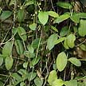
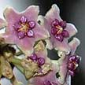

|
|
|
plants
text index | photo
index
|
| mangroves |
climbers and vines
growing on other plants in mangroves and near the shore
|
 
|
||||
| Stems thick long. Leaves thick and succulent. Flowers emerge in a cluster. Rare. It is Critically Endangered. | Stems thick long. Leaves thick and succulent. Flowers emerge in a cluster. Fruits long, thin and bean-like. Sometimes seen in our mangroves. | A shrub or rambling climber to 15m or more. 3-5 leaflets (10-12cm long) dark green. Flowers delicate, pale pink ( 1cm) on slender inflorescence. Fruits circular and flat pods (3-4cm). Common in our back mangroves. | A slender, woody climber up to 5m long. Leaves fleshy (5-10cm) green, opposite. Flowers small (about 1cm) with fuzzy petals, in branched inflorescence. Fruits green, ribbed (8-10cm) in a pair. Rare. Scrambles over other mangrove trees. It is Critically Endangered. | Stems thin. Two kinds of leaves: small circular fat leaves (2-2.5cm) and larger hollow leaves (7-12cm long) that are oval. Flowers tiny. Often seen on trees in mangroves and near shores. |
| Stems thread-like long (3-8m) grows in a tangle on host plants. No visible leaves. Flowers tiny (1.5-2mm). Fruits small, round, juicy white berries (7mm). Sometimes seen on other shore plants. | Climbing shrub, thin stems. Leaves thin, leathery, narrow (7-12cm). Flowers small, white on long stalks. Compound fruits green, turning orange. Sometimes seen on seaside cliffs and coastal forests, also inland. | Stem thin, long (2-15m). Leaves narrow, long (6-7cm) with curling tip. Flowers tiny, white in clusters. Fruits shiny berry, green turning pink to orange. In back mangroves but also inland wild places. | Climbing shrub 4m to 6-7m. Vine-like branches. Leaves (4-9cm) thin, dark glossy green with a toothed margin. Flowers small star-like (0.4cm). Fruits are small capsules (1cm). Sometimes seen on our shores. | |
| Liana to 10m tall. Leaves (7-12cm) a fresh green. Flowers star-shaped bright yellow. Commonly planted in parks and gardens. Originally back mangrove and tidal swamps. | Prickly climber. Leaves bipinnate, eye-shaped leathery. Flowers bright yellow in clusters. Fruits flat pods. Stems armed with thorns. Sometimes seen on wild shores and back mangroves. | Prickly climber. Leaves bipinnate. Flowers yellow in clusters. Fruits flat prickly pods. Stems armed with thorns. Rarely seen. | Climber. Leaf with tendril or modified into tall pitchers. Male flower long spike, female flower banana-shaped. Sometimes seen on natural cliffs on our Southern shores. |


|
|
||
|